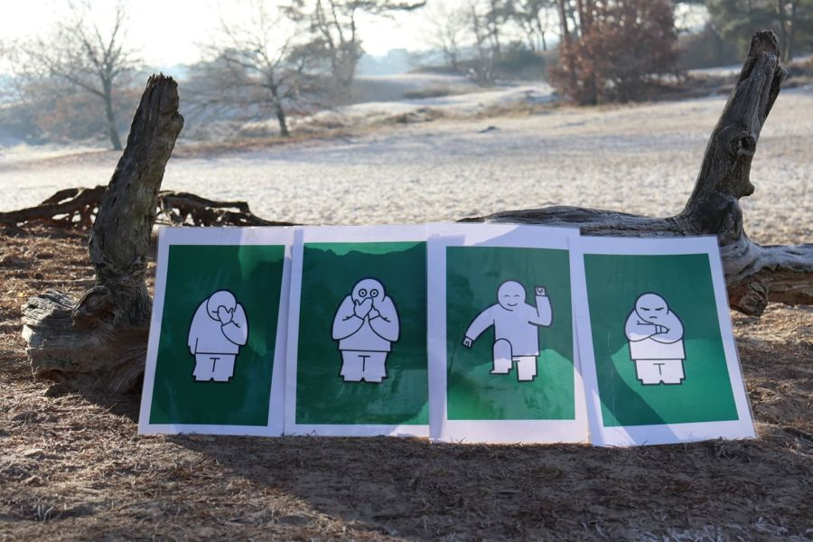
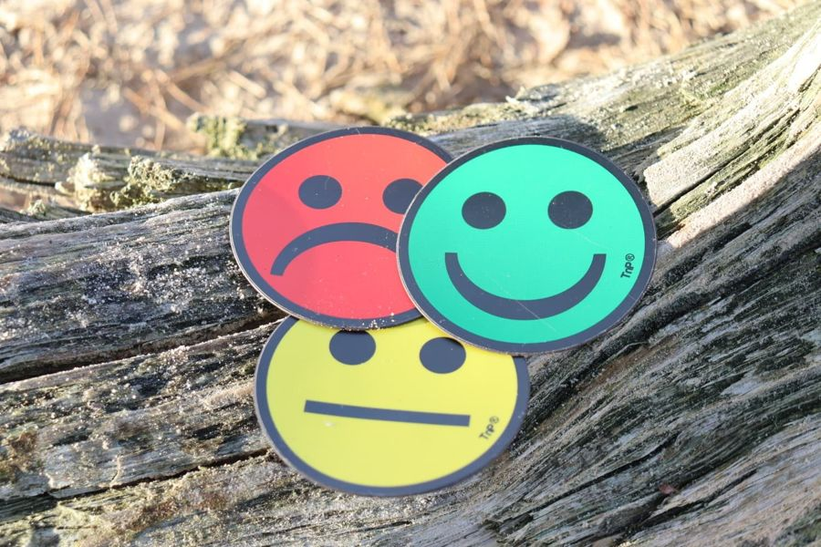
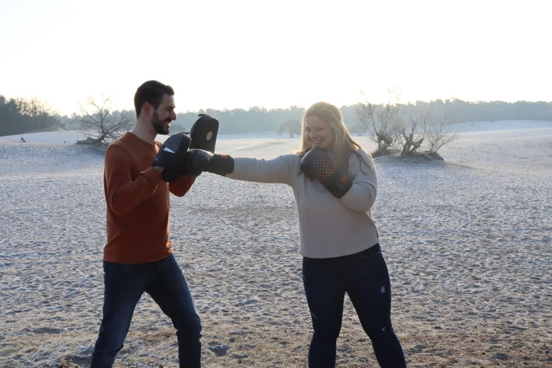

Psychomotorische therapie
Vastlopen in gedrag, emoties of zelfbeeld? Bij PMT leer je door te doen en te ervaren, met je lichaam en beweging als vertrekpunt.


Zo werkt psychomotorische therapie
PMT is een bewegings- en lichaamsgerichte behandelvorm waarin ervaren en leren door te doen centraal staan. We besteden veel aandacht aan denken, voelen en handelen. Samen onderzoeken, ontdekken en ervaren we, zodat je nieuwe inzichten en handvatten krijgt om je uitdagingen aan te pakken.
Waarbij kan het helpen?
- Omgaan met boosheid, spanning of angst
- Beter herkennen en uiten van emoties
- Meer zelfvertrouwen en een positiever zelfbeeld
- Grenzen voelen en aangeven
- Omgaan met prikkels en onrust in je lijf
Elk traject is maatwerk: we sluiten aan bij jouw vraag en tempo.
Hoe ziet een traject eruit?
Kennismaken
Vrijblijvend gesprek over jouw vraag en situatie.
Intake & doelen
We stellen samen concrete behandeldoelen op.
Sessies
Wekelijkse sessies van 60 minuten: doen, ervaren en bespreken.
Evaluatie
We meten voortgang en vertalen het geleerde naar thuis, school of werk.
PMT bieden we individueel aan; voor organisaties is groepstherapie mogelijk. De therapeut stemt werkvormen af op jouw leeftijd en vraag.

Wat kost het?
Individueel: € 95,00 per wekelijkse sessie van 60 minuten.
Groepstherapie: tarief op aanvraag, afhankelijk van programma en duur.
Vergoeding: veel zorgverzekeraars vergoeden PMT gedeeltelijk vanuit de aanvullende verzekering. Informeer vooraf bij je zorgverzekeraar of dit voor jouw polis geldt.
Vergoeding hangt af van je situatie, verzekeraar of gemeente, we geven hierover geen garanties, maar denken graag met je mee.
Wie verzorgt dit aanbod? Lucinda Looijenga en Sander Gijselhart, beiden geregistreerd vaktherapeut (FVB/NVPMT).
Meld je aanGoed om te weten
Heb ik een verwijzing nodig voor PMT?
Nee, je kunt je direct bij ons aanmelden. Kom je via een verwijzer of organisatie, dan stemmen we de doelen en terugkoppeling in overleg af.
Voor welke leeftijden is PMT geschikt?
We werken met kinderen, jongeren en volwassenen. De werkvormen passen we aan op leeftijd en ontwikkelingsniveau.
Hoeveel sessies heb ik nodig?
Dat verschilt per persoon en vraag. Na de intake geven we een realistische inschatting en we evalueren tussentijds.
Wordt PMT vergoed?
Vaak gedeeltelijk vanuit de aanvullende verzekering. Dit verschilt per verzekeraar en polis; informeer vooraf bij je zorgverzekeraar.
Klaar om te beginnen?
Meld je aan of stel je vraag, binnen twee werkdagen nemen we contact met je op om een vrijblijvende kennismaking te plannen.